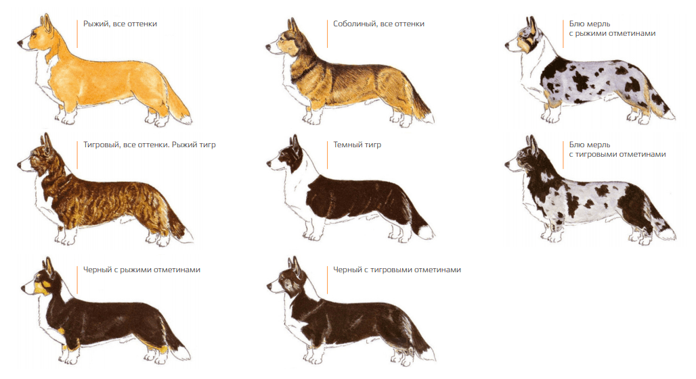
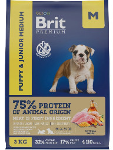
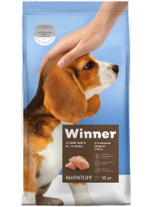
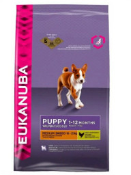

Все лучшее о корги
Узнай много интересного!
Узнай много интересного!
Интересные факты о Корги
Корги-удивительная собака, любимая порода Ее Величества королевы Великобритании Елизаветы ІІ, маленькая овчарка с большим и бесстрашным сердцем.
В названии породы кроется место ее происхождения – Уэльс, Корги происходит от сочетания валлийских слов "карлик" (cor) и "собака" (gi). Что в переводе с уэльского означает "карликовая собака".
Они очень активны и любят подвижные игры, хорошо дрессируются.
Эти собаки - большие любители еды и будут есть все, что попадется им на глаза. Можно заставить их пойти на все ради кожуры арбуза, и они совсем не стыдятся съесть заплесневелый бутерброд с болонской колбасой, который нашли в кустах. Необходимо следить за их рационом, чтобы не допустить ожирения.
Окрасы
Кардиган может иметь любой окрас из разрешённых для Пемброка: рыжий, триколор, соболь, а также редкие окрасы шерсти: тигровый и мраморный. Мраморная расцветка или блю - мерль – чудо природы и настоящая фантастика.
Корм
BRIT
Корма для собак марки Brit Premium выпускает чешская компания VAFO PRAHA. Они относятся к классу премиум. Для щенков корги рекомендованы следующие разновидности: Fresh Chicken With Potato; by Nature Junior M с курицей.
Плюсы: основная часть белка в составе животного происхождения; хорошая витаминно-минеральная добавка; продается во всех магазинах для животных.
Минусы: в состав входят вредные зерновые; нет точного наименования используемых консервантов; не уточнено происхождение мясных компонентов; для такого состава высокая цена.
WINNER
Этот рацион на 35% состоит из мяса, а также включает животный жир и свиную печень. В корме наблюдается высокое содержание белка и комплекс витаминов, которые животное получает из экстракта свеклы, цикория, семян льна.
Плюсы: укрепляет иммунитет; поддерживает хорошее состояние зубов и десен; на 35% состоит из отборного мяса; включает комплекс минералов и полезных жирных кислот; не содержит ГМО и пшеницы.
Минусы: редко встречаются крупные упаковки.
Eukanuba
Еду для собак марки Eukanuba выпускает компания Mars на заводах в России. Этот корм относится к премиум-классу. Для щенков корги подходят следующие варианты: Puppy Medium Breed с курицей; Puppy All Breed с ягненком и рисом.
Плюсы:основная часть белка в составе животного происхождения; хорошая витаминно-минеральная добавка; продается во всех магазинах для животных.
Минусы:в состав входят вредные зерновые; нет точного наименования используемых консервантов; не уточнено происхождение мясных компонентов; для такого состава высокая цена.
Видео